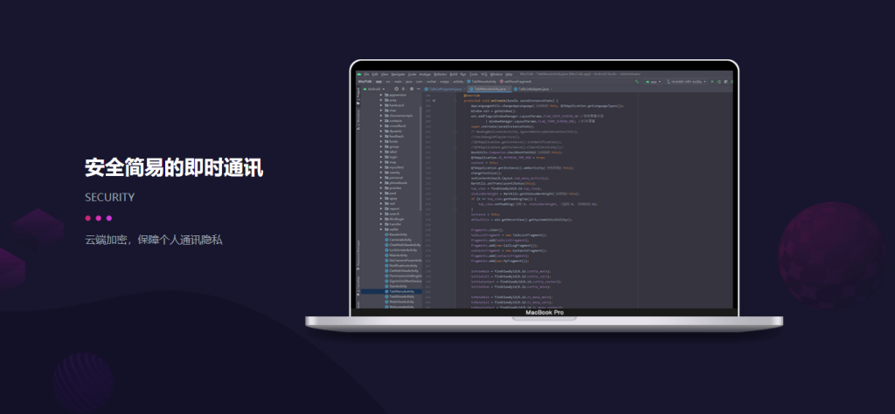
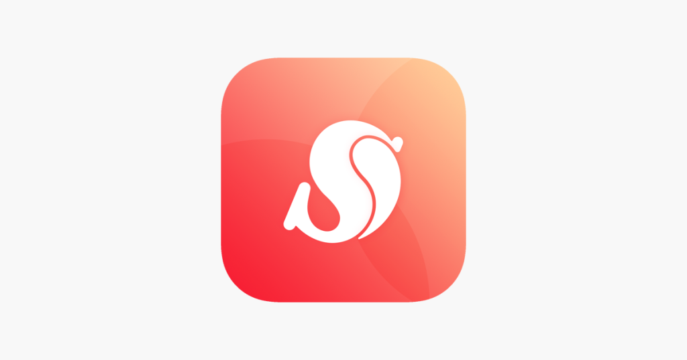

丝瓜聊天有临时聊天吗？
发布时间：2025-02-10
丝瓜聊天目前并没有专门的“临时聊天”功能，但用户可以通过私聊或群聊进行即时沟通。如果希望进行不留痕迹的临时对话，可以选择删除聊天记录，或者使用匿名聊天功能（如果平台支持）。这种方式可以保证对话的隐私性，但不会保存长久的聊天记录。

丝瓜聊天的临时聊天功能介绍
临时聊天的定义和作用
- 临时聊天的概念：临时聊天是指用户在一定时间内进行的即时沟通，聊天记录在对话结束后会自动删除或消失。它的目的是保护用户的隐私，确保信息不会被长期保存，从而避免敏感信息的泄露。
- 临时聊天的作用：这种功能适用于需要保密的对话，用户无需担心聊天内容被别人查看。适合处理一些短期、一次性的交流，或者避免留下长久的记录。
- 避免信息存储：临时聊天让用户在沟通后无需手动删除聊天记录，系统会自动清除内容，从而降低隐私泄露的风险，适合用于临时性事务的讨论。
如何使用临时聊天保护隐私
- 开启临时聊天模式：在丝瓜聊天中，用户可以通过设置进入临时聊天模式。通常，用户在私聊或群聊中可选择开启该功能，确保聊天内容仅在会话进行时可见，结束后即被自动删除。
- 限制信息的保存：通过临时聊天，用户可以限制某些信息的保存时间。无论是文字消息、图片还是视频，都不会在系统中永久存储，增强了隐私保护功能。
- 控制会话的可见性：临时聊天能够避免聊天记录被第三方查看，尤其是对于那些不希望自己的对话被他人存档的用户。设置时，可以选择仅对特定用户开放聊天内容，从而确保对话不被泄露。
如何在丝瓜聊天中开启匿名聊天
匿名聊天的设置方法
- 进入聊天设置：在丝瓜聊天应用中，打开你想进行匿名聊天的私聊或群聊。点击聊天窗口右上角的设置图标，进入设置页面，找到“匿名聊天”选项。
- 选择匿名模式：在设置页面中，你将看到“匿名聊天”选项，点击开启。开启后，你的昵称和头像将不再显示，取而代之的是系统默认的匿名ID或昵称。
- 确认设置并开始聊天：设置完成后，点击保存，返回聊天界面。此时，你已成功开启匿名聊天，进行的所有对话都将以匿名身份进行，保护个人隐私。
匿名聊天的优缺点
-
优点：
- 保护隐私：匿名聊天最大优势是保护用户的个人隐私。通过隐藏真实身份，用户可以更加自由地表达意见或进行敏感对话，不必担心身份暴露带来的风险。
- 避免身份影响：在某些情况下，匿名聊天可以让用户避免因身份问题导致的误解或偏见。特别适合公开场合讨论敏感话题时使用。
- 增强自由性：使用匿名聊天时，用户可以更自由地表达个人看法，而不必担心其他人对其身份的认知影响。
-
缺点：
- 可能引发不负责任的行为：匿名性虽然能保护隐私，但也可能导致一些用户采取不负责任的行为，例如恶意言论或欺诈行为，因匿名身份使得他们感觉不受约束。
- 降低互动的信任度：在某些场合，匿名聊天可能会使得对话的信任度降低。由于无法确认对方身份，沟通的有效性和真诚度可能会受到影响。
- 无法追溯问题：如果发生争议或误解，匿名聊天使得追溯问题的根源变得更加困难，可能导致无法有效解决问题。

丝瓜聊天如何清除聊天记录
删除私聊记录的步骤
- 进入聊天记录界面：打开丝瓜聊天应用，进入需要清除记录的私聊对话框。点击聊天页面右上角的设置图标或选项按钮，进入聊天设置页面。
- 选择清除聊天记录：在设置页面中，找到“清除聊天记录”选项。点击该选项后，系统会弹出确认框，询问是否确认删除所有聊天记录。点击确认后，所有消息内容将被彻底删除。
- 确认删除并清空：完成确认后，私聊记录将无法恢复。如果不希望完全删除某些重要信息，建议先备份或手动选择性删除不必要的聊天内容。
删除群聊记录的操作技巧
- 清除个人在群中的记录：在群聊页面，点击右上角设置图标，进入群设置页面。找到“清除聊天记录”选项后，可以选择清除个人在该群聊中的所有聊天记录。注意，这只会清除你自己的聊天记录，其他成员的记录不受影响。
- 删除群组聊天记录的时间范围：部分群聊提供删除特定时间段内的聊天记录的功能。例如，你可以选择删除过去24小时或一周内的所有消息，而不是全部清空。这种方法更加灵活，能有效保留有价值的信息。
- 群主或管理员的特殊权限：作为群主或管理员，你可能有删除群聊历史记录的更高级权限。部分群组还允许管理员清除群聊中的所有消息，包括其他成员的发言。使用这些权限时，需谨慎，以免删除有用的信息。

丝瓜聊天中的隐私保护措施
隐私设置与临时聊天的关系
- 控制资料展示范围：丝瓜聊天提供了多种隐私设置功能，用户可以决定谁能看到自己的个人资料，包括头像、昵称和签名等。与临时聊天结合时，用户可以更好地控制信息的可见性，确保只有信任的人能看到你的资料。
- 临时聊天增强隐私性：临时聊天功能让用户的聊天记录在对话结束后自动删除，避免个人信息长期存留。通过启用临时聊天，用户可以避免不必要的聊天记录暴露，进一步加强隐私保护。
- 保护私人对话：隐私设置可以与临时聊天相辅相成，避免在不想保存的对话中泄露个人信息。通过这种设置，用户能够在与陌生人或不熟悉的群组中更加自如地交流，同时降低资料泄露的风险。
如何避免信息泄露
- 启用隐私设置：在丝瓜聊天的设置中，用户可以详细控制谁能够查看自己的资料和聊天内容。通过选择“仅好友可见”或“仅群成员可见”，可以避免陌生人查看到敏感信息，降低泄露的风险。
- 使用加密和匿名聊天功能：丝瓜聊天支持匿名聊天功能，用户可以在匿名模式下交流，不会暴露真实身份。此外，部分聊天内容可能通过加密方式传输，确保在传输过程中信息的安全性，防止数据泄露。
- 定期清理聊天记录：为了避免信息泄露，建议定期清理聊天记录。尤其是涉及敏感内容的私聊或群聊，及时删除不需要的消息能有效减少个人信息暴露的机会。丝瓜聊天允许用户删除私聊和群聊中的聊天记录，确保信息不会长期保存。

丝瓜聊天与临时聊天的不同功能
临时聊天与普通聊天的区别
- 聊天记录的存储方式：普通聊天中的消息会长期保存在聊天记录中，用户可以随时查看历史消息。而临时聊天则不同，消息会在对话结束后自动删除，不会被保存，确保了对话的隐私性。
- 适用场景的不同：普通聊天适合日常交流、长期联系和信息存档。而临时聊天则更适用于短期、隐私性较强的对话，比如一次性交流、敏感话题讨论等。
- 消息的可追溯性：在普通聊天中，所有发送的消息都可以回溯和查看。临时聊天的特点是对话结束后消息无法追溯，无法查看过往内容，从而提高了隐私保护。
使用临时聊天时的注意事项
- 确保消息的不可恢复性：虽然临时聊天功能有着强大的隐私保护作用，但需要注意，一旦消息被删除，就无法恢复。因此，发送重要信息时，务必确认自己是否要用临时聊天，避免不小心删除有价值的内容。
- 避免滥用匿名性：临时聊天和匿名聊天通常可以共同使用，虽然它们提供了隐私保护，但滥用匿名身份可能导致不负责任的行为或言论。用户在进行临时聊天时，仍需遵守平台规则和道德标准，避免因匿名性而进行恶意行为。
- 定期检查隐私设置：在使用临时聊天功能时，用户应定期检查自己的隐私设置，确保没有错误设置导致聊天记录或个人信息意外泄露。及时调整隐私设置，确保聊天时的安全性和匿名性。
临时聊天功能是否存在？
丝瓜聊天目前并没有专门的“临时聊天”功能，但用户可以通过删除聊天记录或使用匿名聊天模式来模拟临时聊天体验。匿名聊天功能能够在不暴露真实身份的情况下进行短期交流，而删除聊天记录则能确保对话内容不被长期保存。
如何确保临时聊天内容不被保存？
要确保丝瓜聊天中的临时聊天内容不被保存，可以开启匿名聊天或使用聊天记录清除功能。通过设置对话为匿名模式，聊天内容不会关联到个人资料，且在对话结束后可选择清除所有聊天记录，避免信息存储在系统中。
临时聊天与普通聊天有何区别？
临时聊天与普通聊天的主要区别在于消息的存储方式。普通聊天中的消息会长期保存，而临时聊天则在对话结束后自动删除记录。临时聊天更适合处理一次性或隐私较强的对话，而普通聊天适用于长期交流和信息存档。